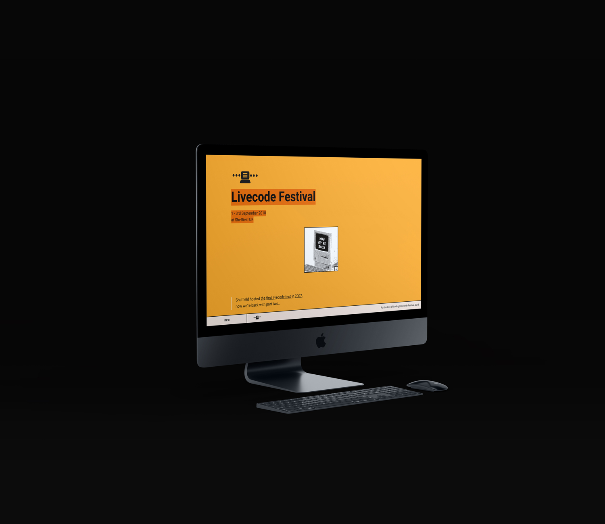

Livecode festival, London(unofficial) re-design for Livecode Fest.
(2018)
19L12 — livecodefest 2018
Livecode festival is algorithmic music festival, held in England, the former design is only orange texts with plain white background. this design picked up key elements like color, plain layout and organized them systematically.
eventually, this design is never being used due to technical issue.